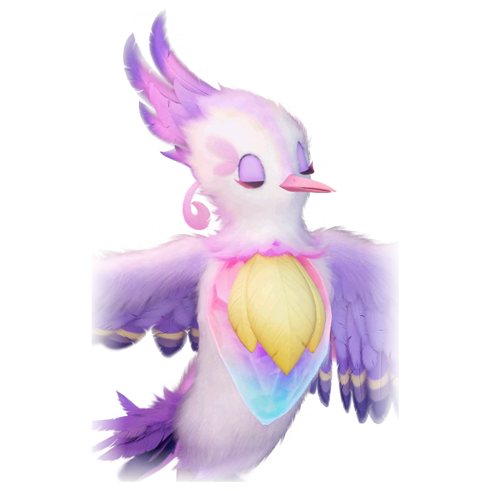

รายชื่อ Aniimo › #039

นกน้ำหอม (Fragrancier)
#039ธาตุมืดNovaSupportTier A
พิถีพิถันเรื่องกลิ่น จึงเก็บน้ำหวานหลายชนิดไว้ในตัวเพื่อสร้างวัตถุดิบน้ำหอมที่ไม่เหมือนใคร
ดูรายละเอียดเต็ม ร่างพิเศษ และร่างเปล่งประกายค่าสถานะพื้นฐาน
| HP | 84 |
|---|---|
| ATK | 111 |
| P.DEF | 68 |
| M.DEF | 65 |
| REGEN | 110 |
| BREAK | 81 |
สกิล
| โจมตีปกติ | ATK มืด ใช้พลังมืดโจมตีเป้าหมายระยะประชิด |
| สกิล 1 | Blossoming Moment มืด กระโดดหลบการโจมตี ให้กลิ่นหอมห่อหุ้มตัวก่อนพุ่งลงจิกเป้าหมายทำดาเมจ ถ้าหลบสำเร็จจะได้โล่เท่ากับ 10% ของ HP สูงสุด เป็นเวลา 20 วินาที |
| สกิล 2 | Withering Bloom มืด ปล่อยกลิ่นหอม ทำดาเมจเป้าหมายในระยะ และฟื้น HP ให้ทั้งทีมเท่ากับ 5% ของ HP สูงสุดของตัวเอง ถ้าในระยะมีเป้าหมายเดียว การฮีลเพิ่มเป็นสองเท่า |
| สกิล 3 | Secret Fragrance Mark มืด ทำดาเมจเป้าหมายด้านหน้าและติด Secret Fragrance 20 วินาที ระหว่างที่มีเครื่องหมาย โจมตีปกติธาตุมืดทำดาเมจเป้าหมายเพิ่ม 50% |
| อัลติเมต | Fragrance Bomb มืด กระพือปีกปล่อยกลิ่นหอม เพิ่ม Dark Elemental Boost ให้ทั้งทีม 20% (+1.9% ต่อ ATK 100 สูงสุด 35%) เป็นเวลา 30 วินาที และ [charms] เป้าหมายในระยะให้มึนงงชั่วครู่ |
สายวิวัฒนาการ
- นกน้ำดอกไม้ → นกน้ำหอม (Aniimo เลเวล 27)
จุดเกิด
- Sea of Flowers Lv. 19–28
Held Item ที่แนะนำ
- Spirited Feather Aniimo ที่สวมใส่ได้ REGEN เพิ่ม 0.7 ต่อเลเวล
- Auspicious Bell เมื่อใช้สกิล มีโอกาส 20% ได้รับ 5 EP
งานใน Homeland
งานธาตุมืด Lv.3, สันทนาการ Lv.3, ทำน้ำหอม Lv.3